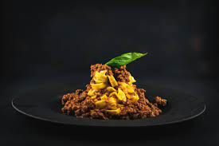

A profissional picture on display showing bolognese pasta on a plate.
Description
This Bolognese pasta sauce is a crowd-pleaser, takes next to no effort,
and can be made with fresh vegetables that you probably already have in
your pantry!
Ingredients
1 chopped onion
5 chopped green olives
2 meat or vegetable stock cubes dissolved in 100ml of water
2 chopped tomatoes
500g ground beef
1 tablespoon olive oil
2 cans of ready-made tomato sauce
1 carrot
500g of pasta
Steps
Chop the onion and sauté for a few minutes in a pan with hot oil until
the onion is golden brown, stirring to prevent it from burning.
Mix in the ground beef and let it cook for a few minutes.
Add the broth, sauce, chopped tomatoes and halved carrots and stir well.
Let it cook for approximately 40 minutes on low heat with the pan half
covered. Discard the carrots once the sauce is ready.
Prepare the pasta, mix the sauce with the pasta and serve.